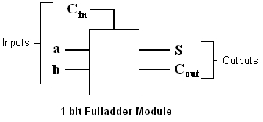

Next: Example Module 3, Previous: Example Module 1, Up: Modules
In this section we will consider an example which will illustrate the usage of constructs which one should make use of if one is desirous of building a module which is described completely in the form of a behavioral model. This example, as in case of the previous example, builds a 1-bit fulladder module. Before we present the example, we shall present the basics of the concepts involved.
A module should respond to the changes in the line states of it's input busses. It should repsond by computing the line
state values of its output busses (corresponding to the new inputs), and write these values onto the output busses. In
libLCS, changes in the states of individual bus lines are called as line events. Hence, a module should repsond to
line events on the lines of it's input busses. The different possible line events are specified in the enumerated type
LineEvent (defined in the header file linevent.h). The three values a LineEvent variable can take
are as follows:
LINE_STATE_CHANGE - This value denotes an event corresponding to a change of state of a line. For example,
a state transition from LOW to HIGH or HIGH to LOW on a line leads to a
LINE_STATE_CHANGE event.
LINE_POS_EDGE - This value denotes an event correspoding to a positive edge in the state transition.
That is, LINE_POS_EDGE event occurs when there is a state transition from LOW to HIGH on a line.
LINE_NEG_EDGE - This value denotes an event correspoding to a negetive edge in the state transition.
That is, LINE_NEG_EDGE event occurs when there is a state transition from HIGH to LOW on a line.
There are three different types of busses in libLCS. So far in this document, we have considered only one of those types. We will now list all three types of busses and their properties. It is very important to understand the capabilities and usage of the different types of busses if one is desirous of building his/her own modules. This example will make use of two of the types. The next example will make use of all the three types of busses.
InputBus - InputBus is a template class which encapsulates a read-only bus. It has been designed to
be read-only as the module to which it is an input should not have a write access over it. InputBus objects also
have features which enable them to drive modules by notifying the modules about line events occuring on their lines.
The InputBus template class requires a single integral template parameter which indicates the number of lines in
the bus. The declaration of this class is as follows:
template <int bits>
class InputBus;
Bus - Bus class objects are read and write busses. However, they do not have the ability to notify a
module about line events on their lines even though the Bus class is derived from the class InputBus.
The class Bus is a template class requiring a single integral template parameter which indicates the number of
lines in the bus. The declaration of this class is as follows:
template <int bits>
class Bus;
InOutBus - InOutBus class objects are read and write busses which have the ability to notify a module
about line events occuring on their lines. The InOutBus class is derived from the class Bus.
The class InOutBus is a template class requiring a single integral template parameter which indicates the number of
lines in the bus. The declaration of this class is as follows:
template <int bits>
class InOutBus;
The various bus classes are defined in individual header files as follows: bus.h for the class Bus,
inbus.h for the class InputBus, and inoutbus.h for the class InOutBus.
The inheritance heirarchy of the three bus classes is as follows.
InputBus
|
o-- Bus
|
o-- InOutBus
As we can see from the above inheritance heirarchy (and also from the above description of the various bus classes), one
can use only InOutBus objects without ever using the classes Bus and InputBus. However, in order to
enforce strict access control by allowing access only when required, it should be made a practice to use the
proper bus class. This and the next example will illustrate when and why to use a particular bus class.
Below is the black box diagram of the 1-bit fulladder module which we will build in this section. The module will represent a behavioral model of a 1-bit fulladder and will not consist of other smaller modules.
In the above diagram,
a and b are the single bit inputs to the fulladder, and Cin is the carry input.
S is the sum output, and Cout is the carry output. A hardware module translates into a module class in
libLCS. The module class definition, of the fulladder module shown in the above figure, is as follows.
// A module class, which has to listen to line events occuring
// on input busses, should be derived from the class Module.
class MyFullAdder : public Module
{
public:
// The constructor takes 5 arguments - 2 correspond to the outputs, and 3
// correspond to the inputs.
MyFullAdder(const Bus<1> &sum, const Bus<1> &cout, const InputBus<1> &ip1,
const InputBus<1> &ip2, const InputBus<1> &cin);
// Module class destructor.
~MyFullAdder();
// This is the function through which the module object is notifed about
// LINE_STATE_CHANGE events occuring on its input busses. This function is
// defined in the base class Module and has to be overriden in all the
// derived classes which have to listen to LINE_STATE_CHANGE events on
// their input busses.
virtual void onStateChange(int pid);
private:
// An input bus object for each of the inputs.
InputBus<1> a, b, Cin;
// Output bus objects for the sum and carry outputs.
Bus<1> S, Cout;
};
The above module class definition captures all the salient features of a module which has to repsond to events occuring on its input busses. Below is the list of these salient features.
Module. The class Module defines few virtual
functions which have to be overriden in the derived class as neccessary. These functions are dicussed below.
onStateChange (this function is declared as a virtual function in the class
Module). This function is called by an input bus when a LINE_STATE_CHANGE event occurs on one of its lines.
Hence, this function should calculate the output bus line states corresponding to the new input line states and write
them onto the output busses.
There are two more action functions which can be overriden in the derived module class: onNegEdge and
onPosEdge. Modules which have to respond to LINE_NEG_EDGE and LINE_POS_EDGE events should override
the functions onNegEdge and onPosEdge respectively.
By convention, the constructor of any module class should only take input and output busses as arguments. Below is the
implementation of the constructor of the MyFullAdder module class.
// The argument list should have output busses followed by input busses
// by convention. This is the same convention followed with the
// off-the-shelf module classes in libLCS.
MyFullAdder::MyFullAdder(const Bus<1> &sum, const Bus<1> cout,
const InputBus<1> in1, const InputBus<1> in2, const InputBus<1> cin)
: Module(), a(in1), b(in2), Cin(cin), S(sum), Cout(cout) // Member initialiser list.
{
// Each of the input busses should be asked to notify
// the module about LINE_STATE_CHANGE events on their
// lines.
a.notify(this, LINE_STATE_CHANGE, 0);
b.notify(this, LINE_STATE_CHANGE, 0);
Cin.notify(this, LINE_STATE_CHANGE, 0);
// This will make the output bus line states to
// correspond to the input bus line states.
onStateChange(0);
}
As we can see from the above constructor implementation, each of the input busses should be asked to notify the module
class about line events occuring on their lines. This is done through function notify (which is a member function
of the class InputBus). Note that, even though the class Bus is a subclass of the class InputBus,
one cannot use objects of class Bus to notify a module about line events on their lines. The function notify is
declared as private in the class Bus. This forces the user to use objects of type InputBus as input
busses to modules. Busses of type InputBus come with an added protection that they are read-only. It has been
designed this way as modules should not be allowed to write onto their input busses!
The prototype of the function
InputBus::notify is as follows:
void notify(Module *mod, const LineState &event, const int &portId, const int &line=-1);
The first argument is a pointer to the module to which it has to notify about line events. The second argument specifies
the type of line event which has to be notified to the module. In our case, we have requested to notify when a
LINE_STATE_CHANGE event occurs on the bus lines. One can also request to be notified of LINE_POS_EDGE or
LINE_NEG_EDGE events. The third argument to the notify function is the portId. The input bus will notify the
occurance of a line event to the module using this ID. This helps the module identify as to which of the input busses is
making the notification. The module can then respond differently to line events occuring on different input busses based
on the portId. In our case however, we have used 0 as the portId for all the input busses as our module will take the
same action when a LINE_STATE_CHANGE event occurs on any of its input busses. The last and the final argument to
the notify function has a default value of -1. A value of -1 indicates that the bus should make the notification when the
desired line event occurs on any of its lines. If the module requires a different notification for each of the bus lines,
then it has to request a different notification for each line using the line number as the fourth argument (and also a
different portId for each line).
Event action functions are the functions which respond to the line events occuring on input bus lines of a module.
Their duty is to take the necessary action as per the events occuring on the input lines. Typically, they recalculate
the output bus line states, corresponding to the new input bus lines states, and write the results onto the output bus
lines accordingly. There are three event action functions which a module can use to respond to line events occuring on
its input busses: 1. onStateChange, 2. onPosEgde, 3. onNegEdge. An input bus will call one of
these functions depending on the type of request made through the notify function in the module class constructor. In
the case of MyFullAdder module, we have requested notification of only the LINE_STATE_CHANGE event. Hence,
we need to declare and define only the onStateChange function. The input busses will then notify about a
LINE_STATE_CHANGE event to the MyFullAdder object by making a call to the onStateChange function.
The event action functions take one argument. This argument can be used as an ID to identify the bus or line on which the event has occured. A different action can be taken if different IDs are used for different busses and lines. In the case of
MyFullAdder however, we have used a common ID for all the input busses as a LINE_STATE_CHANGE
event on any of its bus lines will lead to a common action of re-calculating the output bus line states and writing
them onto the output bus lines. The implementation of the onStateChange function is as follows.
void MyFullAdder::onStateChange(int portId)
{
S = a&~b&~c | ~a&b&~c | ~a&~b&c | a&b&c;
Cout = a&b&~c | a&~b&c | ~a&b&c | a&b&c;
}
The following is the implementation of the destructor of the MyFullAdder module class.
MyFullAdder::~MyFullAdder()
{
// The stopNotification function should be called by
// exactly the same parameters, in the same order as
// they were passed to the notify function in the
// constructor of the module class.
a.stopNotification(this, LINE_STATE_CHANGE, 0);
b.stopNotification(this, LINE_STATE_CHANGE, 0);
Cin.stopNotification(this, LINE_STATE_CHANGE, 0);
}
The destrcutor should merely ask all the input busses, which have been notifying line events to the module, to stop notifying. Failing to do this will lead to invalid memory references by the input bus objects.
Below is the complete listing of the program which defines the MyFullAdder class and tests it.
#include <lcs/lcs.h>
using namespace lcs;
// A module class, which has to listen to line events occuring
// on input busses, should be derived from the class Module.
class MyFullAdder : public Module
{
public:
// The constructor takes 5 arguments - 2 correspond to the outputs, and 3
// correspond to the inputs.
MyFullAdder(const Bus<1> &sum, const Bus<1> &cout, const InputBus<1> &ip1,
const InputBus<1> &ip2, const InputBus<1> &cin);
// Module class destructor.
~MyFullAdder();
// This is the function through which the module object is notifed about
// LINE_STATE_CHANGE events occuring on its input busses. This function is
// defined in the base class Module and has to be overriden in all the
// derived classes which have to listen to LINE_STATE_CHANGE events on
// their input busses.
virtual void onStateChange(int pid);
private:
// An input bus object for each of the inputs.
InputBus<1> a, b, Cin;
// Output bus objects for the sum and carry outputs.
Bus<1> S, Cout;
};
// The argument list should have output busses followed by input busses
// by convention. This is the same convention followed with the
// off-the-shelf module classes in libLCS.
MyFullAdder::MyFullAdder(const Bus<1> &sum, const Bus<1> &cout,
const InputBus<1> &in1, const InputBus<1> &in2, const InputBus<1> &cin)
: Module(), a(in1), b(in2), Cin(cin), S(sum), Cout(cout) // Member initialiser list.
{
// Each of the input busses should be asked to notify
// the module about LINE_STATE_CHANGE events on their
// lines.
a.notify(this, LINE_STATE_CHANGE, 0);
b.notify(this, LINE_STATE_CHANGE, 0);
Cin.notify(this, LINE_STATE_CHANGE, 0);
// This will make the output bus line states to
// correspond to the input bus line states.
onStateChange(0);
}
void MyFullAdder::onStateChange(int portId)
{
S = a&~b&~Cin | ~a&b&~Cin | ~a&~b&Cin | a&b&Cin;
Cout = a&b&~Cin | a&~b&Cin | ~a&b&Cin | a&b&Cin;
}
MyFullAdder::~MyFullAdder()
{
// The stopNotification function should be called by
// exactly the same parameters, in the same order as
// they were passed to the notify function in the
// constructor of the module class.
a.stopNotification(this, LINE_STATE_CHANGE, 0);
b.stopNotification(this, LINE_STATE_CHANGE, 0);
Cin.stopNotification(this, LINE_STATE_CHANGE, 0);
}
int main(void)
{
Bus<1> a, b, Cin, S, Cout;
MyFullAdder adder(S, Cout, a, b, Cin);
Tester<3> tester((a,b,Cin));
ChangeMonitor<3> cmin((a,b,Cin), "Input");
ChangeMonitor<2> cmop((S,Cout), "Sum");
Simulation::setStopTime(1000);
Simulation::start();
return 0;
}
The output when the above program is compiled and run is as follows.
At time: 0, Input: 000 At time: 0, Sum: 00 At time: 200, Input: 001 At time: 200, Sum: 01 At time: 300, Input: 010 At time: 400, Input: 011 At time: 400, Sum: 10 At time: 500, Input: 100 At time: 500, Sum: 01 At time: 600, Input: 101 At time: 600, Sum: 10 At time: 700, Input: 110 At time: 800, Input: 111 At time: 800, Sum: 11